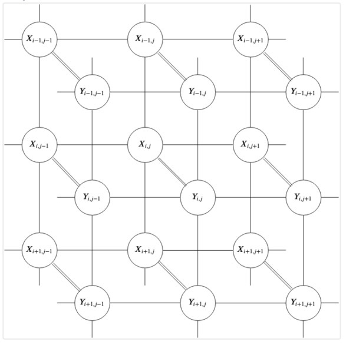
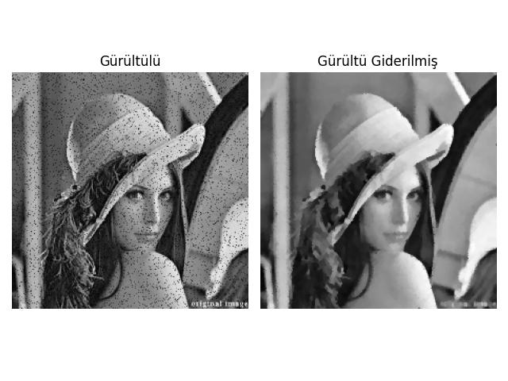

MRF formülasyonu şöyle der: Bir görüntüyü gözlemlediğimizde, aslında gözlemleyemediğimiz bir şeyin — temiz, gerçek sahnenin — gürültülü bir versiyonunu görüyoruz. Gürültü giderme problemi özünde şu soruyu sormaktır: elimizdeki bozulmuş piksellerden yola çıkarak, altta yatan gerçeği nasıl kurtarabiliriz?

Yukarıdaki grafik bu ilişkiyi özetlemektedir. Her \(x_{i,j}\) düğümü (ki bir olasılıksal değişken), doğrudan gözlemlediğimiz gürültülü pikseli temsil eder. Her \(y_{i,j}\) düğümü ise bulmak istediğimiz gizli, temiz pikseli temsil eder. İki katman ayrı tutulmuştur: X düğümleri bağımsız gürültü kanalları aracılığıyla karşılık gelen Y düğümlerine bağlanırken, Y düğümleri kendi aralarında yatay ve dikey komşuluklar boyunca birbirine bağlıdır. Bu ikinci bağlantı kümesi kritiktir — doğal görüntülerin yerel olarak düzgün olma eğiliminde olduğu, yani komşu piksellerin birbirine yakın değerler alması gerektiği inancını kodlar. Olasılıksal açıdan düğüm (değişken) arasındaki bağlantılar bir koşulsal olasılık ilişkisini ima eder.
Bu yapı bir Markov Rastgele Alanıdır (MRF) ve matematiksel olarak şunu söylememizi sağlar: her \(Y_{i,j}\), tüm görüntü verildiğinde yalnızca doğrudan komşularına bağlıdır. Bu yerel bağımsızlık özelliği, hesaplanamaz görünen küresel bir olasılık problemini yönetilebilir yerel bir probleme dönüştürür ve aşağıda türetilen gürültü giderme algoritmasının temelidir.
Görüntü gürültü giderme matematiğini türetmek için görüntüyü yalnızca bir sayı ızgarası olarak değil, rastgele değişkenlerden oluşan bir küme olarak ele alıyoruz, ve olasılıksal bir çerçeveden probleme bakıyoruz. İki bilgi parçasıyla başlıyoruz:
Bayes Teoremi’ne göre, gördüğümüz gürültü verildiğinde bir görüntünün “doğru” temiz görüntü olma olasılığı şöyledir:
\[P(Y | X) = \frac{P(X | Y)\, P(Y)}{P(X)}\]
X ve Y, temelde bir ızgara üzerinde düzenlenmiş bireysel rastgele değişkenlerden oluşan koleksiyonlar olan Rastgele Alanlardır. Görüntü \(N \times N\) boyutundaysa, Y yalnızca tek bir rastgele değişken değil, \(N^2\) rastgele değişkenden oluşan bir kümedir: \(Y = \{y_{1,1}, y_{1,2}, \ldots, y_{N,N}\}\). Her \(y_{i,j}\), \(L = \{0, 1, \ldots, 255\}\) kümesindeki herhangi bir tam sayı değerini alabilen ayrık bir rastgele değişkendir.
\[P(Y | X) \propto P(X | Y)\, P(Y)\]
Olurluk — gürültü piksel bazında bağımsızdır:
\[P(X | Y) = \prod_{i,j} P(x_{i,j} | y_{i,j})\]
Önsel (prior) dağılım — her piksel yalnızca komşularına bağlıdır (MRF varsayımı):
\[P(Y) = \prod_{i,j} P(y_{i,j} | \mathcal{N}(y_{i,j}))\]
burada \(\mathcal{N}(y_{i,j})\) konum bağlamındaki komşulardır.
Kanıt — tüm Y için yalnızca bir normalleştirme sabiti:
\[P(X) = \text{sabit}\]
Dolayısıyla piksel düzeyindeki tam Bayes ifadesi şöyledir:
\[ P(Y | X) \propto \prod_{i,j} P(x_{i,j} | y_{i,j}) \cdot \prod_{i,j} P(y_{i,j} | \mathcal{N}(y_{i,j})) \]
Gibbs sayesinde, tüm pikseller üzerindeki bu devasa birleşik dağılımdan tek seferde örnekleme yapmak yerine, her pikseli kendi yerel koşullu dağılımından örnekliyoruz. Yukarıdaki denklem bize tüm pikseller üzerindeki birleşik sonsalı aynı anda verir. Tek bir piksel \(y_{i,j}\) için koşullu dağılımı elde etmek için \(P(y_{i,j} \mid Y_{-(i,j)}, X)\)’i, yani diğer her şey sabit tutulduğunda tek bir pikselin dağılımını hesaplamamız gerekir. Bunu, \(y_{i,j}\)’yi içermeyen tüm terimleri sabit olarak ele alarak yaparız.
Çarpımları gözden geçirip “\(y_{i,j}\)’ye gerçekten bağlı olan terimler hangileri?” diye sorduğumuzda yalnızca ikisi hayatta kalır: olabilirlik çarpımından \(P(x_{i,j} \mid y_{i,j})\) ve ön dağılım çarpımından \(P(y_{i,j} \mid \mathcal{N}(y_{i,j}))\) (\(y_{i,j}\)’nin komşularına ait MRF terimleri de \(y_{i,j}\)’yi içerir, ancak Hammersley-Clifford teoremi kapsamında bunlar önsel dağılım teriminin kodladığı yerele indirgenir). Dolayısıyla \((k,l) \neq (i,j)\) olan tüm \(y_{k,l}\)’leri sabitler, sabit olan her şeyi atarız ve geriye kalan \(P(x_{i,j} \mid y_{i,j})\, P(y_{i,j} \mid \mathcal{N}(y_{i,j}))\) ile orantılıdır. “Odaklanma” adımı aslında diğer tüm pikselleri onlara koşullanarak dışarı marjinalleştirmektir — ki bu da Gibbs adımıdır.
Artık tek bir piksel için şunu yazabiliriz:
\[ P(y_{i,j} \mid \mathcal{N}(y_{i,j}), x_{i,j}) \propto P(x_{i,j} \mid y_{i,j})\, P(y_{i,j} \mid \mathcal{N}(y_{i,j})) \]
Piksel bazında bağımsız gürültü varsayımıyla (her \(x_{i,j}\) bağımsız olarak bozulmaya uğramış kabul ediyoruz):
\[P(x_{i,j} | y_{i,j}) \propto \exp(-\lambda|y_{i,j} - x_{i,j}|)\]
Düzgün bir önsel dağılım varsayımıyla (bir piksel komşularıyla uyuşmalıdır):
\[ P(y_{i,j} | \mathcal{N}(y_{i,j})) \propto \exp\!\left(-\sum_{z \in \mathcal{N}(y_{i,j})} |y_{i,j} - z|\right) \tag{2} \]
İkisini çarpıp \(-\log\) alarak:
\[P(y_{i,j} | \mathcal{N}(y_{i,j}), x_{i,j}) \propto \exp(-E(y_{i,j}))\]
burada:
\[ E(y_{i,j}) = \sum_{z \in \mathcal{N}(y_{i,j})} |y_{i,j} - z| + \lambda|y_{i,j} - x_{i,j}| \]
Fiziğe dayalı modellerde olasılığı Enerji (E) ile ilişkilendiririz. (2)’de \(\propto\) kullandık; bu normalleştiricinin atıldığı anlamına gelir. Tam ifade şöyledir:
\[P(y_{i,j} | \mathcal{N}(y_{i,j}), x_{i,j}) = \frac{1}{Z} \exp(-E(y_{i,j}))\]
\(Z = \sum_{k=0}^{255} \exp(-E(k))\), bölme fonksiyonudur — olasılıkların toplamının 1 olmasını sağlamak üzere seçilmiştir, tüm 256 olası piksel değeri üzerinden \(\exp(-E)\)’nin toplamıdır.
Enerji, birbiriyle rekabet eden iki terimden oluşur:
Önsel Dağılım Terimi (R): Düzgünlüğü teşvik etmek için bir piksel ile komşuları arasındaki farkları cezalandırır. Bu açıdan “önsel dağılım” salt göreli bir düzgünlük cezasıdır. Doğal görüntülerin yerel olarak düzgün olduğu inancını kodlar; bir pikselin mutlak anlamda hangi değeri alması gerektiğine dair hiçbir taahhütte bulunmaz.
Kayıp Terimi (L): Gerçeğin çok uzağına sapmamamızı sağlamak için gürültü giderilen piksel ile orijinal gürültülü gözlem arasındaki farkı cezalandırır.
Kod
# z aday piksel değeridir -sözde kod-
# L1 Önsel Dağılım: toplam|komşular - değer|
prior = np.sum(np.abs(target_neighbors[:, :, np.newaxis] - z), axis=1)
# L1 Kayıp: lambda |gürültülü - değer|
loss = lam * np.abs(target_noisy[:, np.newaxis] - z)\(\sum_{z \in \mathcal{N}(y_{i,j})} |y_{i,j} - z|\) olasılıksal bir nicelik olarak garip görünebilir, ama neyi ölçtüğünü düşünün — bir aday piksel değeri \(k\)’nın komşularıyla olan toplam uyuşmazlığını ölçüyor. Bu toplam:
Küçük olduğunda: \(k\) komşularına yakındır → düşük enerji → yüksek olasılık. Piksel “uyum sağlar.”
Büyük olduğunda: \(k\) komşularından çok farklıdır → yüksek enerji → düşük olasılık. Piksel “öne çıkar.”
Karşılaştırmak gerekirse, Gaussian dağılımı da bir şeyden uzaklığı ölçer — bu durumda bir değer ile ortalama arasındaki uzaklığı. Ortalamadan uzaklaştıkça ceza artar (düşük olasılık); yaklaştıkça ödül büyür (yüksek olasılık). L1 önsel dağılımı aynı şekilde çalışır; yalnızca ‘ortalama’, yerel komşuluk uzlaşısıyla değiştirilir — sabit bir hedef yoktur, yalnızca yakın piksellerin anlaşması vardır.
\(\exp(-E)\) neden düşük enerji = yüksek olasılık sağlar? \(E\) arttıkça \(-E\) azalır ve dolayısıyla \(\exp(-E)\) monoton biçimde azalır. Üstel fonksiyonun özellikle seçilmesi, bunu istatistiksel fiziğe (Boltzmann dağılımı) bağlayan ve olasılıkların her zaman pozitif olmasını güvence altına alan şeydir.
Maskeleri (dama tahtası deseni) kullanmamızın nedeni bu rastgele değişkenlerin bağımsızlığıyla ilgilidir. Bir MRF’de iki rastgele değişken \(y_a\) ve \(y_b\), komşu değillerse koşullu olarak bağımsızdır. Bu, vektörleştirilmiş kodda Gibbs örneklemesinin kurallarını ihlal etmeden binlerce pikseli aynı anda örneklememizi sağlayan kaldıraç / mekanizmadır.
Amacımız bu olasılığı maksimize eden Y’yi bulmaktır (MAP tahmini). \(P(X)\) herhangi bir gürültülü görüntü için sabit olduğundan, payı maksimize etmeye odaklanırız: \(P(X | Y)\, P(Y)\). Kodda bu, her hedef piksel için 8 çevreleyen pikseli (3×3 pencere) toplayan doldurulmuş görüntü ve komşular yığını tarafından işlenir.
Örnekleme
Bu enerji değerlerini piksel değeri için bir “seçime” dönüştürmek amacıyla Gibbs dağılımını kullanırız.
Sayısal İstikrar (Stability): \(\exp(-E)\) hesaplanırken bilgisayar hatalarını (NaN) önlemek için üs almadan önce minimum enerjiyi çıkarırız:
\[ \frac{e^{-E_i}}{\sum_j e^{-E_j}} = \frac{e^{-(E_i - \min E)}}{\sum_j e^{-(E_j - \min E)}} \]
Kod
# min(energy) çıkarmak exp()'nin çok küçük olmasını engeller (alt taşma)
probs = np.exp(np.min(energy, axis=1, keepdims=True) - energy)
probs /= np.sum(probs, axis=1, keepdims=True) # Toplamı 1 olacak şekilde normalleştirKoddaki örnekleme adımı, \(P(y_{i,j} | \mathcal{N}(y_{i,j}), x_{i,j})\) koşullu olasılık dağılımına uygulanan Ters Dönüşüm Örneklemesinin doğrudan bir uygulamasıdır. Bu, hesaplanması imkânsız olan global normalleştirme sabitini hesaplamadan görüntü uzayını keşfetmemizi sağlayan Gibbs Örnekleyicisinin temel mekanizmasıdır.
Koşullu Dağılım
Bir Markov Rastgele Alanında, komşuluğu \(\mathcal{N}(y_{i,j})\) ve gözlemlenen veri \(x_{i,j}\) verildiğinde tek bir pikselin olasılığı şöyledir:
\[ P(y_{i,j} = k \mid \mathcal{N}(y_{i,j}),\, x_{i,j}) = \frac{\exp(-E(k))}{\sum_{m=0}^{255} \exp(-E(m))} \tag{1} \]
Burada \(E(k)\), piksel \(k \in \{0, \ldots, 255\}\) değerini
aldığındaki enerjidir. Kodda probs değişkeni, geçerli
maskedeki her piksel için bu ayrık olasılık dağılımını temsil eder.
Paydayı değerlendirmek için aynı anda tüm 256 aday için \(E(k)\)’ya ihtiyacımız vardır. Kodda \(z\),
possible_vals = np.arange(256) ile değiştirilir; bu da
yukarıdaki skaler hesaplamayı tüm adaylar üzerinde vektörleştirilmiş bir
hesaplamaya dönüştürür:
prior = np.sum(np.abs(target_neighbors[:, :, np.newaxis] - possible_vals), axis=1)
loss = lam * np.abs(target_noisy[:, np.newaxis] - possible_vals)Yukarıdaki satırlar, her komşu \(z\) ve her aday değer \(k \in \{0, \ldots, 255\}\) için \(|z - k|\)’yı hesaplıyor. “Bu pikselin alabileceği 256 olası değerin her biri için, komşular bu değerden ne kadar uzakta?” sorusunu soran vektörleştirilmiş bir yoldur. Şekiller daha açık hale getirir:
target_neighbors şekli \((K,
8)\)’dir — geçerli maskede \(K\)
piksel, her birinin 8 komşusu[:, :, np.newaxis] sonrasında \((K, 8, 1)\) olurpossible_vals şekli \((256,)\)’dır, \((1, 1, 256)\)’ya yayınlanırnp.sum(..., axis=1) ise 8 komşu üzerinde toplar ve
\((K, 256)\) şeklini verirDolayısıyla nihai prior dizisi, tüm \(K\) piksel ve \(k\)’nın tüm 256 değeri için eşzamanlı
olarak değerlendirilen \(\sum_{z \in
\mathcal{N}(y_{i,j})} |k - z|\)’dir. Yayınlama, matematikte her
aday \(k\) için komşular üzerindeki
toplam olarak yazacağınız işi yapıyor.
Kümülatif Dağılım Fonksiyonu (CDF)
probs’daki olasılıklara göre bir \(k\) değeri seçmek için Kümülatif Dağılım
Fonksiyonunu (CDF) kullanırız. \(F(k)\)
olarak tanımlanan CDF, \(k\)’ya kadar
tüm değerlerin olasılıklarının toplamıdır:
\[F(k) = P(Y \leq k) = \sum_{m=0}^{k} P(y = m)\]
Kod: cum_probs = np.cumsum(probs, axis=1)
Bu satır, olasılık kütle fonksiyonunu (toplamı 1 olan) 0’dan başlayıp 1’de biten bir “merdiven” fonksiyonuna dönüştürür.
Ters Dönüşüm Örneklemesi
Örneklemenin temel teoremi şunu belirtir: \(U\), \([0,
1]\) üzerinde düzgün dağılımlı bir rastgele değişkense, \(X = F^{-1}(U)\), \(F\) dağılımına sahiptir. Bunu uygulamak
için: \(r \in [0, 1]\) aralığında
düzgün bir rastgele sayı üretilir. Kod:
random_vals = np.random.rand(len(target_noisy), 1). \(F(k) \geq r\) koşulunu sağlayan en küçük
\(k\) indeksi bulunur. Kod:
Y[mask] = np.argmax(cum_probs > random_vals, axis=1).
Parçalar Hâlinde Gibbs ve \(P(Y)\)
Gibbs Örneklemesi bir Markov Zinciri Monte Carlo (MCMC) yöntemidir. \(P(y_1, y_2, \ldots, y_n)\) birleşik olasılığını hesaplamak yerine — bu \(256^{\text{Yükseklik} \times \text{Genişlik}}\) kombinasyonu gerektirir — yerel koşullu dağılımlardan örnekleme yaparsınız. Matematik, her pikselin yerel koşullu dağılımından yeterince uzun süre örnekleme yaparsanız, elde edilen Y görüntüsünün nihayetinde gerçek, global sonsal (posterior) dağılımından \(P(Y | X)\) bir örnek olacağını garanti eder.
Özet Tablo: Matematikten Koda
| Matematiksel Adım | Formül | Kod Satırı |
|---|---|---|
| Yerel Koşullu | \(P(y_{i,j} \mid \mathcal{N}(y_{i,j}), x_{i,j})\) | probs = np.exp(...) / sum(...) |
| CDF Hesabı | \(F(k) = \sum P(m)\) | np.cumsum(probs, ...) |
| Düzgün Rastgele | \(U \sim \text{Unif}(0,1)\) | np.random.rand(...) |
| Ters Eşleme | \(k^* = \min\{k : F(k) \geq U\}\) | np.argmax(cum_probs > random_vals, ...) |
np.argmax’ı bir boolean dizi üzerinde kullanarak
(cum_probs > random_vals), NumPy koşulun doğru olduğu
ilk indeksi belirler; bu da vektörleştirilmiş maskedeki her piksel için
eşzamanlı olarak \(F^{-1}(U)\) işlemini
gerçekleştirir.
Vektörleştirme (Dama Tahtası)
Standart bir döngüde bir pikseli güncelleyip ardından bir sonrakine geçersiniz. Ancak bir piksel yalnızca komşularına ve \(x_{i,j}\)’ye bağlı olduğundan, tüm “Çift” pikselleri aynı anda güncelleyebilirsiniz; çünkü hiçbiri birbirinin komşusu değildir.
Matematik: Görüntüyü bağımsız kümelere (4 maske) bölerek, bir \(y_{i,j}\) değerleri grubunu güncellerken \(\mathcal{N}(y_{i,j})\) ve \(x_{i,j}\) kanıtının sabit kaldığını garanti ederiz.
Kod: İşte bu yüzden for mask in masks: vardır ve
ardından binlerce piksel için aynı anda 256 olası gri düzeyin tümü için
enerjiyi hesaplayan devasa bir NumPy yayını gelir.
MAP ile Tam Sonsal Çıkarım Karşılaştırması
Kesin olarak söylemek gerekirse, MAP (Maksimum A Posteriori) ve Gibbs Örneklemesi iki farklı çıkarım felsefesini temsil eder; ancak bu makale ve MRF bağlamında genellikle aynı madalyonun iki yüzü olarak tartışılırlar. Bu, bir çelişkiden çok optimizasyondan simülasyona bir geçiştir.
MAP (Optimizasyon): \(P(Y | X)\)’i maksimize eden tek en olası Y görüntüsünü bulur. Genellikle gradyan inişi veya graf kesmeleri kullanılarak çözülür.
Tam Sonsal (Örnekleme): Ortalamayı, varyansı veya belirsizliği anlamak için \(P(Y | X)\)’ten pek çok görüntü örneklenir.
MAP için neden Gibbs kullanılır?
Gradyan yükselişi gibi yöntemler sıklıkla yerel maksimumda takılı kalır. Gibbs Örneklemesi, enerji yüzeyinde daha sağlam biçimde gezinir: yalnızca “tepeyi tırmanmak” yerine örnekleme yaparak algoritma yerel minimumlardan çıkabilir. \(\beta\)’yı (ters sıcaklık) artırdıkça, \(P(Y | X)\) dağılımı mod etrafında çok “sivri” hale gelir ve yüksek \(\beta\)’da sonsaldan örnekleme MAP’i bulmakla eşdeğer hale gelir. Makale, olasılıksal çıkarım aracını (Gibbs) optimizasyon problemini (MAP) çözmek için kullanır; çünkü dağınık, gürültülü verilere karşı daha dayanıklıdır.
MAP size tek bir yanıt verir — tek en olası temiz görüntü. Gibbs örneklemesi ise prensipte makul temiz görüntülerin bir dağılımını verir. Pratikte, yeterli sayıda iterasyondan ve yüksek \(\beta\)’dan sonra örnekleyici zamanının neredeyse tamamını MAP çözümünün yakınında geçirir; dolayısıyla zincirin son karesi gürültü giderilmiş çıktı olarak kullanılır. Yani Gibbs kullanarak MAP sonucuna erişmiş oluyoruz, örnekleme sonsal dağılımı geziyor, fakat o zincirin ortalamasını almak yerine son varılan noktayı raporlayarak bir optimal tek nokta hesabı yapmış oluyoruz.
Kod
import numpy as np
import matplotlib.pyplot as plt
from skimage import io
def vectorized_gibbs_l1(noisy_img, iterations=12, lam=1.0):
M, N = noisy_img.shape
Y = noisy_img.copy().astype(np.float32)
possible_vals = np.arange(256, dtype=np.float32)
masks = [
(np.arange(M)%2 == 0)[:, None] & (np.arange(N)%2 == 0),
(np.arange(M)%2 == 0)[:, None] & (np.arange(N)%2 == 1),
(np.arange(M)%2 == 1)[:, None] & (np.arange(N)%2 == 0),
(np.arange(M)%2 == 1)[:, None] & (np.arange(N)%2 == 1)
]
for it in range(iterations):
for mask in masks:
padded = np.pad(Y, 1, mode='edge')
neighbors = np.stack([
padded[0:-2, 0:-2], padded[0:-2, 1:-1], padded[0:-2, 2:],
padded[1:-1, 0:-2], padded[1:-1, 2:],
padded[2:, 0:-2], padded[2:, 1:-1], padded[2:, 2:]
], axis=-1)
target_neighbors = neighbors[mask]
target_noisy = noisy_img[mask]
prior = np.sum(np.abs(target_neighbors[:, :, np.newaxis] - possible_vals), axis=1)
loss = lam * np.abs(target_noisy[:, np.newaxis] - possible_vals)
energy = prior + loss
probs = np.exp(np.min(energy, axis=1, keepdims=True) - energy)
probs /= np.sum(probs, axis=1, keepdims=True)
cum_probs = np.cumsum(probs, axis=1)
random_vals = np.random.rand(len(target_noisy), 1)
Y[mask] = np.argmax(cum_probs > random_vals, axis=1)
return Y
img_noisy = io.imread('../../func_analysis/func_70_tvd/lena-noise.jpg', as_gray=True)
if img_noisy.max() <= 1.0:
img_noisy = (img_noisy * 255).astype(np.uint8)
denoised_img = vectorized_gibbs_l1(img_noisy, iterations=10, lam=2.5)
fig, axes = plt.subplots(1, 2)
axes[0].imshow(img_noisy, cmap='gray')
axes[0].set_title('Gürültülü')
axes[0].axis('off')
axes[1].imshow(denoised_img, cmap='gray')
axes[1].set_title('Gürültü Giderilmiş')
axes[1].axis('off')
plt.tight_layout()
plt.savefig('lena1.jpg')
[devam edecek]
Kaynaklar
[1] Yue, Markov Random Fields and Gibbs Sampling for Image Denoising